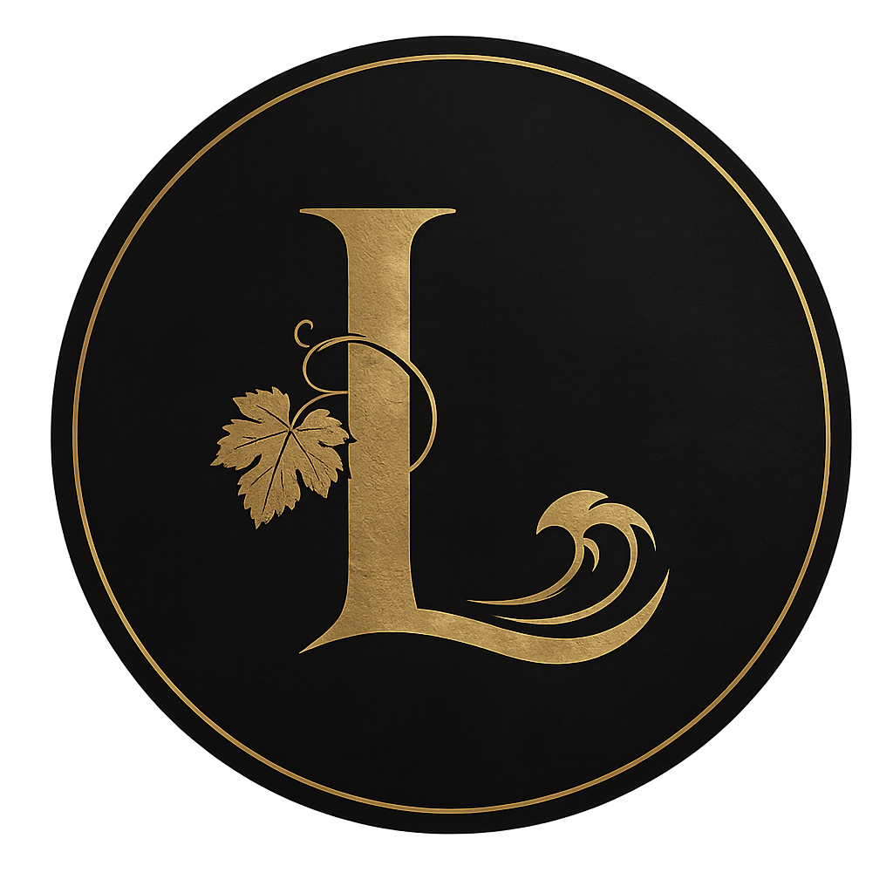

El acceso a este sitio web está reservado a personas mayores de 18 años.
No soy mayor de edad Consume vino con moderación.En Roa de Duero, a escasos metros de donde se escribe la historia de la Ribera del Duero, hay un barrio. Un barrio donde las noches de verano se alargaban entre amigos y donde la sede del Consejo Regulador de la D.O. era tan parte del paisaje que todos la llamaban, simplemente, La Deno.
De esas noches, de ese lugar y de esa denominación nació LADENO. Un vino con raíces reales en la tierra que mejor conoce el Tempranillo.
Vino tinto procedente de una de las regiones más prestigiosas de España.
LADENO representa la búsqueda de equilibrio entre tradición y elegancia. Un vino creado para acompañar momentos que permanecen.
Para información o colaboraciones:
Mv. +34 677 799 313